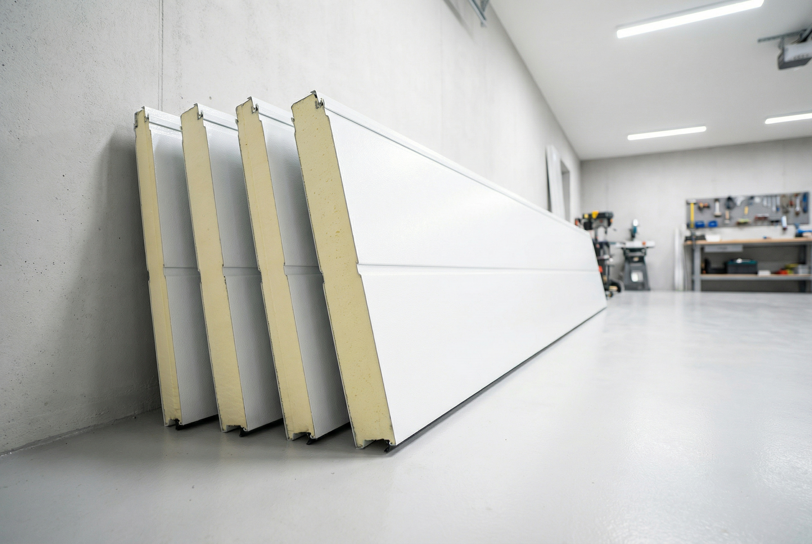
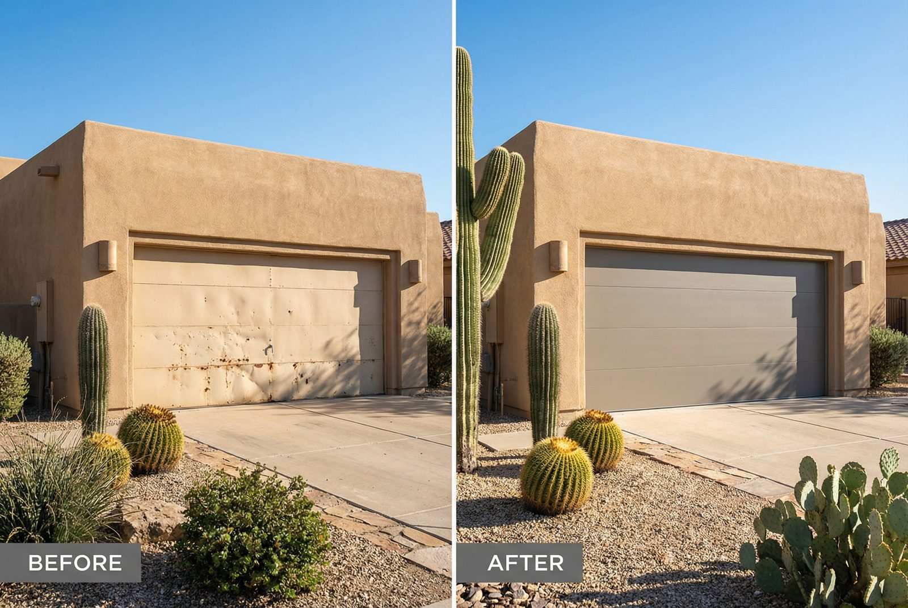
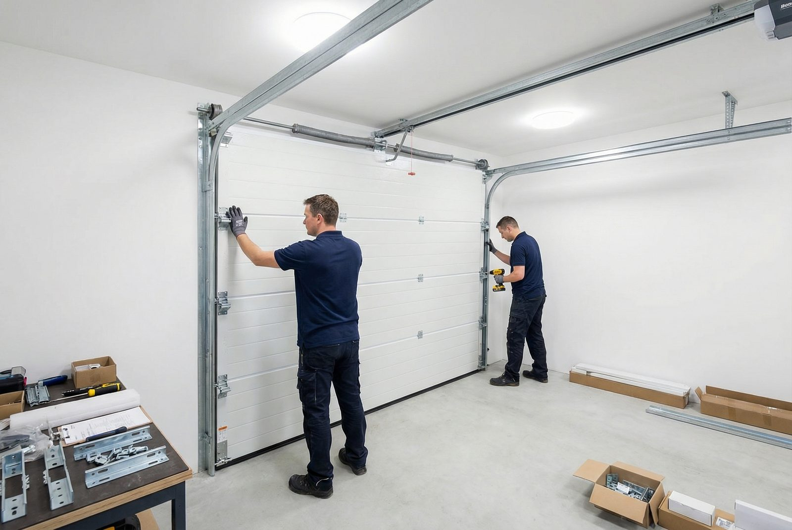

Brands We Service

Brands We Service
A new garage door is one of the highest-return home improvements you can make. According to remodeling cost reports, garage door replacement consistently ranks at the top for return on investment — and in a market like Gilbert, where curb appeal directly affects resale value, a quality installation makes a real difference. Whether you're replacing an aging builder-grade door in a Power Ranch or Cooley Station home, upgrading to a smart opener system, or starting fresh with new construction, Gilbert Garage Door Pro handles every step of the process from selection to final test run.
Gilbert's rapid growth means thousands of homes in the area still have the original doors installed during the early 2000s building boom. Those doors — along with their original springs and openers — were functional at the time but fall short by today's standards — especially given Arizona's punishing heat. A modern insulated garage door doesn't just look better; it actively reduces heat transfer into your living space, protects your vehicle and stored belongings from extreme temperatures, and operates more quietly and reliably than doors built two decades ago. Our installation team helps Gilbert homeowners navigate their options and choose a door that performs in the desert climate, not just on paper.
We install all major door brands including Clopay, Amarr, and Wayne Dalton, and we pair every door with the right opener system for your household. For attached garages, we strongly recommend belt drive openers for their near-silent operation. For newer Gilbert homes already on a smart home platform, we integrate LiftMaster myQ and Chamberlain myQ systems that connect directly to your phone. Explore our LiftMaster smart opener page for details on what's possible, and see our cost guide for pricing context before your estimate appointment.

Not every door style is a fit for every home or budget. Here's how the main types compare, and what works best in Gilbert's climate and housing stock.
The most common type installed across the East Valley. Sectional doors are made up of horizontal panels connected by hinges. When opened, they travel up along vertical tracks and then horizontally along the ceiling. They offer excellent weather sealing, strong insulation options, and a wide range of styles from basic raised panels to contemporary flush designs. Because the panels flex at the hinges rather than pivoting as a single unit, sectional doors work well even in garages with limited driveway depth. They're also compatible with all opener types and are our most frequently requested installation.
Carriage house doors replicate the look of traditional swing-out barn doors while operating as modern sectional doors. The decorative hardware — handles, hinges, and clavos — is surface-mounted, giving the appearance of a vintage design without the operational quirks of a genuine swinging door. In Gilbert neighborhoods with Craftsman, Spanish Colonial, or ranch-style architecture, carriage house doors dramatically improve curb appeal. They're available in steel, composite, and real wood, and can be ordered with decorative windows to add dimension to a flat facade.
Contemporary garage doors feature clean flush panels, often with full-view glass inserts framed in aluminum. They're popular in Gilbert's newer luxury developments and homes with modern or mid-century architectural styles. Full-view aluminum doors with tempered glass panels maximize natural light and make a bold design statement. Flush steel doors with no windows are equally popular in contemporary builds where a clean, minimalist aesthetic is the goal. Both styles are available with thermal glass and insulated frames to mitigate heat gain in Arizona summers.
Roll-up doors coil around a drum above the opening rather than traveling along ceiling tracks, making them ideal when ceiling clearance is limited or when the installation is commercial or industrial. If you're outfitting a workshop, storage unit, or small commercial bay in the Gilbert area, roll-up doors offer unmatched durability and security. We install both standard roll-up doors for light commercial applications and heavy-duty coiling steel doors for high-cycle environments. Contact us to discuss your specific commercial requirements.
Material selection matters more in Gilbert than it would in a mild-climate state. Here's an honest look at each option through the lens of desert performance.
Steel is the most popular garage door material in Gilbert, and for good reason. It's durable, requires minimal maintenance, resists denting better than aluminum, and comes at a wide range of price points. A standard single-layer steel door works fine if the garage is detached, but for attached garages, we strongly recommend a steel door with polyurethane foam insulation. Steel handles Arizona's UV exposure well and can be painted or factory-finished in dozens of colors. Over the 20-to-30-year lifespan of a well-built steel door, the maintenance cost is dramatically lower than wood.
Aluminum doors are worth considering in Gilbert if you value a lightweight door that won't rust, particularly if your home is near irrigation canals or in an area with elevated moisture. Aluminum is the dominant material in full-view contemporary door frames, as it holds large glass panels without the weight of a steel door. The trade-off is that aluminum dents more easily than steel and offers less natural insulating value in the panel itself. For large two-car or RV doors where weight is a factor for the opener motor, aluminum's lighter profile reduces mechanical strain over time.
Real wood garage doors are genuinely beautiful, and nothing else replicates the warmth and texture of natural cedar or redwood. However, in Gilbert's climate, wood is a high-maintenance choice that many homeowners come to regret. The combination of intense UV radiation, extreme heat, and monsoon humidity cycles causes real wood to expand, contract, warp, and crack far more aggressively than it would in a temperate climate. A wood door requires repainting or re-staining every two to three years in Arizona versus five to seven years in other regions. If you have your heart set on wood, we'll install it — but we'll also give you a candid assessment of what the ongoing maintenance commitment looks like in Gilbert specifically.
Composite doors give you the visual appeal of a wood carriage house door without the maintenance burden. The outer skin is typically an embossed steel or fiberglass panel with a realistic wood-grain texture, factory-finished in colors that simulate stained or painted wood. The core is insulated, and the overall construction handles Arizona's heat and UV cycles far better than natural wood. In neighborhoods like Agritopia where architectural character matters, composite carriage house doors are our most popular premium installation. They cost more than standard steel but substantially less than real wood, and they hold their appearance with minimal upkeep.

Most homeowners don't think about their garage door's R-value — until they spend a summer in a house where the garage shares a wall with the kitchen or living room. In Gilbert, where summer temperatures routinely exceed 115°F, an uninsulated garage door is essentially a large heat radiator pumping thermal energy into your home all day long. The U.S. Department of Energy notes that a well-insulated garage can meaningfully reduce the load on your home's HVAC system, particularly in attached-garage configurations.
The R-value of a garage door measures its resistance to heat flow — the higher the number, the better the insulation. For Gilbert homes, we recommend a minimum of R-12 for attached garages, and R-16 to R-18 for garages that also serve as workshops or living-adjacent spaces. At those insulation levels, garage temperatures on a 115°F day are typically 20 to 30°F cooler than outside — a significant difference for any car, stored belongings, or appliances kept in the garage.
Not all insulation is equal. There are two primary types used in garage doors:
The Door & Access Systems Manufacturers Association (DASMA) provides consumer resources to help homeowners understand door ratings and performance standards. We're happy to walk you through R-value specifications on any door we quote.

A new door deserves a new opener — and today's openers are dramatically better than the equipment installed in most Gilbert homes a decade ago. Here's what we offer on every installation project.
Belt drive openers use a rubber belt instead of a metal chain to move the trolley, eliminating the rattling and clunking associated with older chain drives. For attached garages — where the noise travels directly into bedrooms, home offices, or living spaces — belt drives are the clear choice. They're quieter, smoother, and require less maintenance than chain drives. We install them on both new construction and retrofit projects throughout Gilbert. If you have a finished room above your garage, a belt drive is non-negotiable.
LiftMaster and Chamberlain's myQ platform is the most popular smart opener system in Gilbert's newer developments, and for good reason. Once connected to your home WiFi, myQ lets you open, close, and monitor your garage door from anywhere using your smartphone. You'll receive instant notifications whenever the door opens or closes — useful for keeping tabs on kids arriving home from school or confirming you closed the door after leaving for work. myQ is compatible with Google Home, Amazon Alexa, and Apple HomeKit. See our LiftMaster service page for more on smart opener integration.
Arizona's monsoon season runs from mid-June through September, and power outages during major storms are common throughout the East Valley. A garage door opener with battery backup means your door functions normally even when the grid goes down — critical if your garage is the only way in and out of your home. LiftMaster's battery backup openers are a standard recommendation on all our Gilbert installations. The backup battery charges continuously from household power and activates automatically during outages, providing dozens of open/close cycles before depletion.
Modern wall-mounted consoles replace the simple button boxes of older openers with smart displays that show door status, lock the door remotely, and integrate with whole-home security systems. Exterior keypads let family members and trusted visitors enter without needing a remote or key. We install wireless keypads, smart wall consoles, and multi-button remotes programmed to work with your new system right out of the box. For homeowners with existing opener systems in good condition, we can often add smart capabilities through a myQ Smart Garage Hub without replacing the full opener.
Gilbert's growth has been remarkable. Communities like Power Ranch, Cooley Station, and the San Tan corridor have added tens of thousands of new homes over the past decade, and the pace of new construction continues. But here's what many new homeowners discover after moving in: the garage door and opener included with the builder's base package are often the minimum-spec product that meets code, not the best choice for long-term performance or livability.
A typical builder-grade door in a new Gilbert home is a single-layer steel door with polystyrene insulation — functional, but a step down from what's available at the same price point when purchased independently. The openers are often chain drive units that rattle the walls of attached garages. Within a year or two, many homeowners in these communities contact us to upgrade to a quieter belt drive opener, a better-insulated door, or a smart opener system that integrates with their new home's automation platform.
This is one of our most common installation scenarios, and we've streamlined the process. We'll come out to assess your current setup, discuss your goals — whether that's quieter operation, better insulation, smarter controls, or all three — and provide a written quote with no obligation. Most upgrades in newer homes can be completed in a single day. If you're in Power Ranch, Cooley Station, Trilogy, or any other newer development and your builder-grade door is already giving you trouble, don't wait for a full failure. Call us for a free assessment before minor frustrations become major repairs.
We handle all standard residential and light commercial opening sizes:
Not sure what size you need? Our technicians measure your opening precisely during the free estimate visit and handle all the configuration so your new door fits perfectly.
Gilbert Garage Door Pro provides garage door installation services throughout Gilbert and the broader East Valley. Whether you're in a newer community like Cooley Station or an established neighborhood near Val Vista and Baseline, our installation teams are nearby and ready to help.

A standard single-car steel garage door with installation runs $800–$1,500. A two-car insulated door ranges from $1,200–$2,500. Premium doors (carriage house, custom, full-view contemporary) can exceed $3,000. Prices are estimates — see our cost guide for details or call for a free on-site quote. We provide free on-site estimates so you get an accurate price for your specific opening and preferences.
A standard single or double garage door installation takes 3 to 5 hours. If we're also installing a new opener, add 1 to 2 hours. Most installations are completed in a single visit. Our technicians arrive with the door pre-ordered to your opening's specifications, so there's no waiting on parts once the appointment is confirmed.
Absolutely. An insulated garage door with an R-value of R-12 or higher can reduce garage temperatures by 20 to 30°F in summer. This protects your car, stored items, and reduces cooling costs for attached garages. We recommend polyurethane-insulated doors for Arizona homes — the foam is injected and bonded to the door panels, providing better performance and structural rigidity than polystyrene bead inserts. For attached garages, a minimum of R-12 is our standard recommendation; R-16 or higher if you use the garage as a workspace.
Yes. We install LiftMaster myQ and Chamberlain smart openers that connect to your home WiFi. Once set up, you can control your door from your phone, receive open/close alerts, and integrate with smart home systems like Google Home, Amazon Alexa, and Apple HomeKit. For homes in Gilbert's newer communities already on a smart home platform, this integration is seamless. See our LiftMaster page for details on available models and features.
Yes. Full removal and disposal of your old garage door and hardware is included in every installation. We handle everything from tear-down to cleanup — you won't be left managing old panels or hardware. The only thing we leave behind is your new door, tested and ready to use.
Call us now at (480) 555-0199 for a free estimate
Call (480) 555-0199